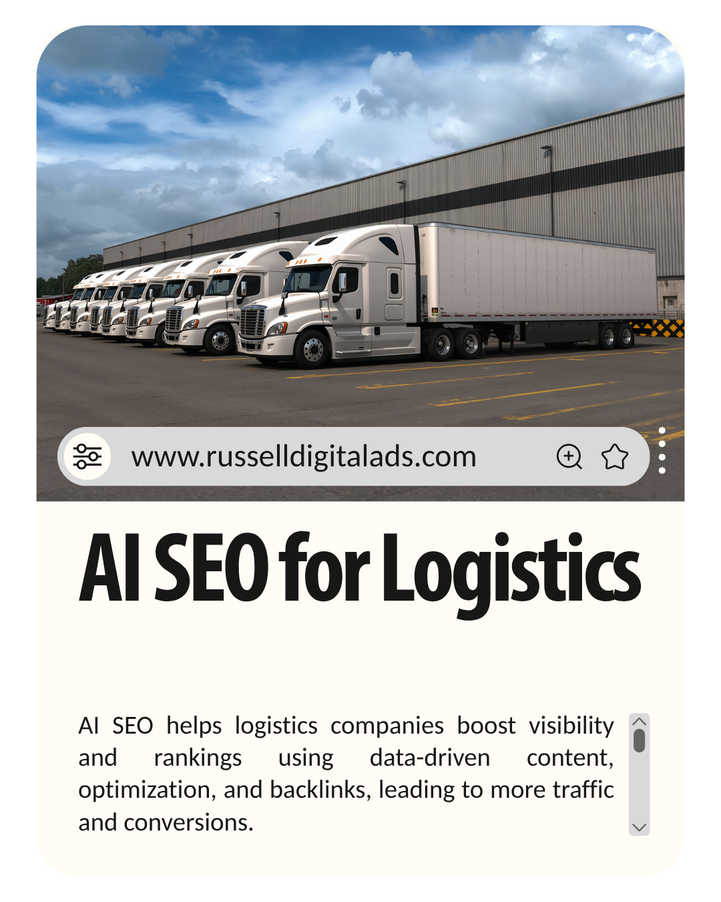

AI-driven SEO services for logistics companies are accomplished by content creation, producing images, and acquiring backlinks. Russell Digital helps logistics companies and freight providers rank internationally by writing data-driven blog articles and optimization of existing pages for AI in logistics businesses.

Search Engine Optimization is rapidly changing, with search engines becoming AI-powered and e-commerce taking place entirely through Google or ChatGPT. Small and local businesses must adapt or they will be overrun by larger corporations with more content marketing, case studies, and content strategy teams.
The logistics industry is no different. Whether you run a freight forwarding operation, a supply chain management company, or a last-mile delivery service, your online visibility determines whether customers find you or your competitors. Over 76% of B2B buyers now research providers online before ever picking up the phone — and that number keeps climbing.
Russell Digital has been helping transportation and logistics companies navigate this shift since AI search became a real factor in lead generation and business growth.
AI Optimization SEO Services
Traditional SEO strategies still apply to modern digital marketing but there are a few key differences with the introduction of AI-generated content:
- Google Search: No longer 10 blue links, transitioning into AI overviews that summarize and recommend brands directly in search results
- AI Search: Searches are becoming more specific, so your content must answer any and all questions your customers could have about shipping, freight, supply chain services, and transportation
- High-quality content: Artificial intelligence is creating content automation, although Google doesn't know the difference, people can tell if you are not putting effort into your content. Quality still wins over volume.
- Conversions: Conversions happen 4-10x more frequently when your business is recommended by an AI model or AI platform like ChatGPT, Gemini, or Perplexity
- Semantic search: Search engines now understand the meaning behind queries, not just keywords. Your pages need to cover topics comprehensively, not just stuff in a target phrase.
AI Search vs. Traditional SEO Strategies: What Logistics Companies Need to Know about Keyword Research and Content Strategy
This is where a lot of logistics businesses get confused. Traditional SEO and AI-driven search optimization are not the same thing — and you need both.
Traditional SEO focuses on ranking your website pages on Google through keyword research, backlinks, technical SEO fixes, and on-page optimization. This still matters. A lot.
AI search optimization (sometimes called Generative Engine Optimization or GEO) is about getting your brand cited and recommended by AI tools like ChatGPT, Claude, and Gemini when potential customers ask questions about logistics services. These AI platforms don't just link to your site — they summarize your expertise and recommend you by name.
The logistics companies ranking at the top right now are doing both. They're building visibility on Google AND making sure their content is structured so AI models recognize them as an authority in the supply chain and transportation industry.
Russell Digital builds SEO strategies that target both traditional search results and generative AI platforms — because that's where the industry is heading in 2026 and beyond.
How Can AI SEO Services Improve Search Rankings for Logistics Companies?
Logistics companies, freight forwarders, and supply chain management companies will benefit from AI SEO by increasing their online visibility, receiving on-page recommendations, and improving the user experience when customers are on your website.
An SEO agency like Russell Digital can help logistics companies reach their business goals by:
- Correcting technical SEO within the website such as schema markup, meta tags, site speed, mobile optimization, and crawlability issues
- Link building in the logistics industry is important — more quality backlinks to your website from transportation blogs, supply chain publications, and industry media show expertise and increase brand visibility
- Developing a content strategy built around topic clusters — pillar pages on core services (freight, warehousing, supply chain management) supported by in-depth articles that establish topical authority
- Running keyword research that goes beyond the obvious terms — targeting long-tail, high-intent queries like "temperature-controlled freight shipping" or "3PL provider for e-commerce" instead of just "logistics company"
- Optimizing for local SEO — Google Business Profile, location-specific service pages, local citations, and directory listings for each region you serve
- Tracking real performance metrics — not just rankings, but qualified leads, quote requests, and revenue from organic traffic
AI tools and algorithms are taking over traditional keyword research. One of the keys in logistics marketing is having enough information about logistics services present and easily accessible on your website. If you have the information, your customers will find it when asking AI systems questions.
Understanding AI Technical SEO for Transportation and Logistics
AI in logistics SEO refers to applying traditional Search Engine Optimization to your website with the intent of influencing machine learning and modern AI tools to recommend your brand when customers are searching for your service. Lead generation happens between 4-10x more when an AI recommends your brand, and we are watching the switch from search results to AI search in real time in 2026.
The technology behind this shift is significant. AI-powered SEO tools use predictive analytics to identify which logistics-related keywords are trending before your competitors catch on. They analyze search demand patterns, seasonal shipping trends, and changes in customer behavior across the supply chain industry — giving you insights that manual research simply can't keep up with.
How Business Growth Happens with AI SEO
- Generative AI will recommend your brand to potential customers actively searching for logistics providers
- Those customers looking for last-mile delivery, freight forwarding, or supply chain management, for example, are 4-10x more likely to choose your business when recommended by an AI model
- Your online presence increases and your conversion metrics improve across all digital channels
- Your website becomes an authority source that both search engines and AI platforms trust and cite
- You reduce your customer acquisition costs over time as organic visibility compounds
AI-Driven Route Optimization: A Content Opportunity Most Logistics Companies Are Missing
Here's something most logistics SEO strategies completely overlook — and it's a massive content gap.
Route optimization is one of the most searched AI applications in logistics right now. Companies are actively looking for providers and technology that use artificial intelligence to optimize delivery routes, reduce fuel costs, and improve operational efficiency.
But almost no logistics company websites have dedicated content about this. They mention it in passing on a services page and move on.
The SEO play is creating dedicated pages and articles around AI-driven route optimization. Target keywords like "AI route planning for logistics" and "automated delivery route optimization." Include real data — fuel savings percentages, delivery time improvements, efficiency gains.
This is exactly the kind of content that ranks well on Google AND gets cited by AI models. Russell Digital has been building content clusters around route optimization for logistics clients — and these pages consistently outperform generic service descriptions in both rankings and lead generation.
Predictive Analytics and Demand Forecasting in Logistics
Another huge content opportunity that most logistics companies are sleeping on: predictive analytics.
Predictive analytics uses AI and machine learning to forecast future outcomes based on historical data. In the logistics industry, this means:
- Demand forecasting — predicting shipping volumes so you can allocate resources before peak seasons hit
- Inventory and supply chain management — anticipating stock needs to prevent shortages across the supply chain
- Maintenance prediction — knowing when fleet vehicles need servicing before breakdowns happen
- Market trend analysis — identifying shifts in transportation demand before competitors react
Decision-makers at logistics companies are actively researching these topics. Creating thorough, expert-level content around predictive analytics positions your brand as a thought leader — and targets high-intent, low-competition keywords that generate qualified leads.
Russell Digital builds entire content strategy pillars around these kinds of opportunities. They don't just chase obvious keywords — they find the gaps where real customer demand is hiding.
Voice Search Optimization for Logistics
Voice search is an emerging trend that most logistics SEO strategies completely ignore. But more professionals are using voice assistants during their workday, and queries shift from typed keywords to conversational questions:
- "Find me a freight company that ships to Canada"
- "What's the cheapest way to ship pallets cross-country?"
- "Who are the top logistics providers in the Southeast?"
To optimize for voice search, use natural conversational language in your content, structure pages with clear Q&A sections, and make sure your local SEO is airtight — voice searches are heavily location-based.
The Tools That Power Local SEO for Logistics
You need the right tools to execute an AI-driven SEO strategy. Here are the ones Russell Digital uses for logistics clients:
- SEMrush / Ahrefs — competitive analysis, keyword research, backlink tracking
- Surfer SEO — AI-powered content optimization and scoring
- Google Search Console — tracking search performance and technical issues
- Screaming Frog — deep technical SEO crawls and site audits
- BrightLocal — local SEO management and citation tracking
- GA4 — tracking traffic, conversions, leads, and revenue attribution
The key isn't having every tool — it's using the right combination strategically and turning data into insights that actually move the needle for your logistics business.
Summary
SEO optimization comes from learning about your business's specific needs, developing the SEO tactics, and implementing a high-volume content plan. This plan is implemented by an expert team at Russell Digital, helping logistics and freight forwarding companies grow their online presence across both traditional search engines and AI-powered platforms.
The logistics companies winning in 2026 aren't just optimizing for Google — they're building the kind of digital presence that gets cited by AI models, earns backlinks from industry publications, and generates qualified leads from customers actively searching for shipping, transportation, and supply chain services.
Russell Digital specializes in AI SEO for logistics companies. From technical SEO audits to content strategy to generative engine optimization, they cover every surface where your customers are looking for providers.
Frequently Asked Questions (FAQs)
What is the pricing of Russell Digital's SEO audit and SEO services?
The SEO audit is completely free, and our services range from $1,500 to $3,000 per month. This includes technical SEO, content strategy, keyword research, link building, and ongoing optimization tailored to the logistics industry.
What is the role of AI models in logistics marketing?
AI models are quickly becoming the primary way customers discover and evaluate logistics providers. When someone asks ChatGPT or Gemini to recommend a freight forwarder or supply chain management company, the AI pulls from websites it considers authoritative and trustworthy. If your brand shows up in those AI-generated answers, you're 4-10x more likely to convert that customer compared to traditional search results.
How can AI SEO services improve search rankings for logistics companies?
By getting your services shown to more people than ever before through multiple channels — Google search results, AI overviews, voice search, and generative AI platforms. People are searching for more specific answers now. If your website answers those questions about freight, shipping, transportation, delivery, and supply chain management with depth and authority, customers will come to you. Russell Digital builds this kind of comprehensive visibility for logistics companies.
What is the difference between traditional SEO and AI SEO for logistics?
Traditional SEO focuses on ranking your pages in Google through keywords, backlinks, and technical optimization. AI SEO adds a layer on top — optimizing your content so that AI platforms like ChatGPT, Gemini, and Perplexity cite and recommend your brand. Both work together. You need traditional SEO as the foundation and AI optimization to capture the growing segment of buyers using AI tools for research.
How long does SEO take to show results for logistics companies?
Most logistics companies start seeing meaningful ranking improvements in 3-6 months. Significant traffic growth and lead generation typically kicks in around 6-12 months. AI tools can accelerate this timeline by identifying opportunities faster and optimizing content more efficiently. Russell Digital tracks performance monthly so you always know exactly where you stand.
Why is content strategy important for logistics SEO?
Content strategy is what separates logistics companies that rank from those that don't. A strong strategy includes pillar pages on core services, supporting articles that cover industry trends and customer questions, case studies that demonstrate real results, and FAQ sections that capture long-tail search demand. Without a plan, you're just publishing random pages and hoping for the best.